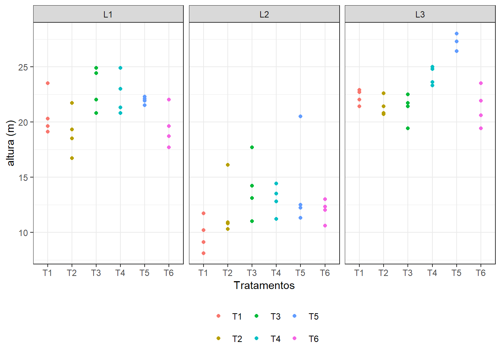
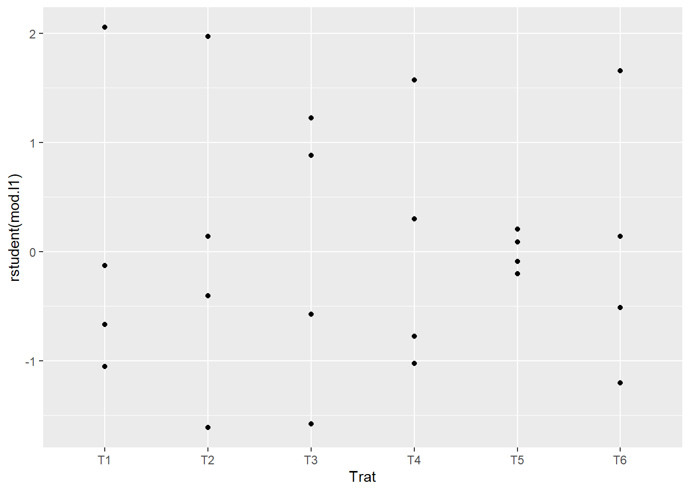
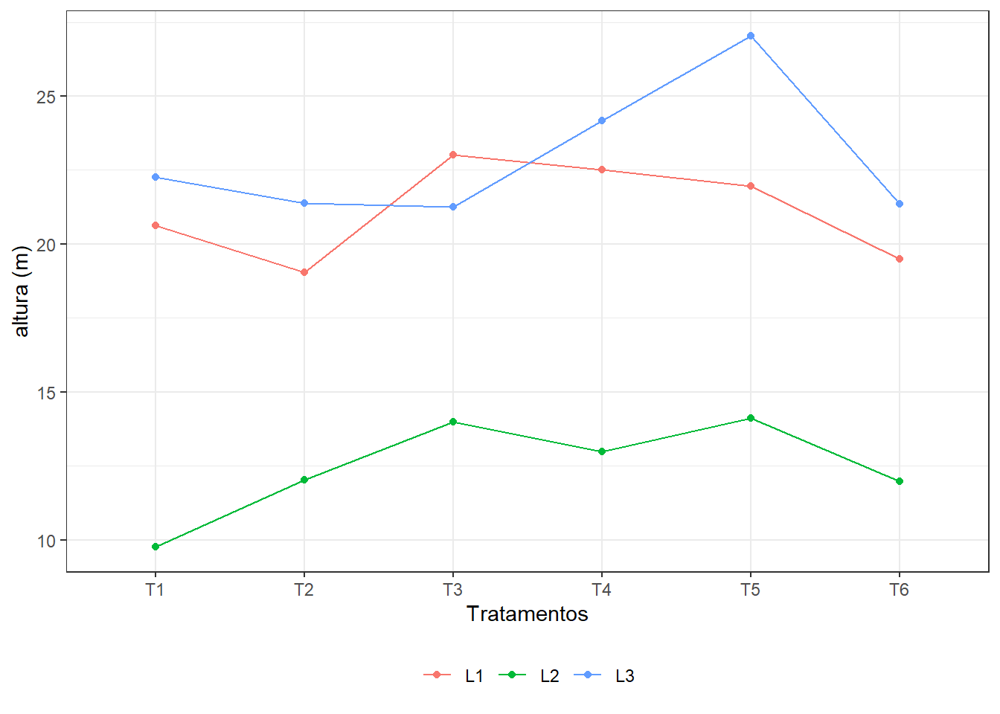
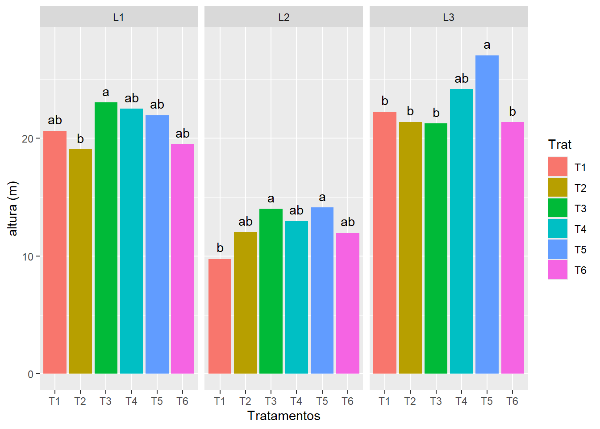

> #' Os dados que se seguem referem-se a alturas (em metros, médias de
#' 25 plantas/parcela) de plantas Eucaliptus grandis, com 7 anos
#' de idade (em 1980) de três ensaios em blocos ao acaso, sob 6
#' tratamentos (progênies).
(dados<- read.csv2("eucalipto.csv"))
> str(dados)
> library(ggplot2)
> ggplot(dados,
aes(x = Trat,
y = altura,
color = Trat)) +
geom_point() +
facet_wrap(~Local) +
xlab("Tratamentos") +
ylab("altura (m)") +
theme_bw() +
theme(legend.position = "bottom",
legend.direction = "horizontal",
legend.title = element_blank())

> library(lmtest)
> #' # Análises individuais
#'
#'## Local 1: Araraquara
#'
mod.l1<- aov(altura ~ Bloco + Trat,
data=dados,
subset = c(Local=="L1"))
# shapiro.test(rstandard(mod.l1))
ggplot(subset(dados, Local == "L1"),
aes(x = Trat,
y = rstudent(mod.l1))) +
geom_point()

> lmtest::bptest(mod.l1)
> anova(mod.l1)
> #'
#'## Local 2: Bento Quirino
#'
mod.l2<- aov(altura ~ Bloco + Trat,
data=dados,
subset=c(Local=="L2"))
# shapiro.test(rstandard(mod.l2))
# lmtest::bptest(mod.l2)
anova(mod.l2)
> #'
#'## Local 3: Mogi-Guaçu
#'
mod.l3<- aov(altura ~ Bloco + Trat,
data=dados,
subset=c(Local=="L3"))
# shapiro.test(rstandard(mod.l3))
# lmtest::bptest(mod.l3)
anova(mod.l3)
> #'
#' # Análise Conjunta
#'
#' Razão entre os quadrados médios dos resíduos
#'
(QMResiduo1<- anova(mod.l1)$"Mean Sq"[3])
> (QMResiduo2<- anova(mod.l2)$"Mean Sq"[3])
> (QMResiduo3<- anova(mod.l3)$"Mean Sq"[3])
> QMResiduo<- c(QMResiduo1, QMResiduo2, QMResiduo3)
(max(QMResiduo)/min(QMResiduo))
> #'
#' ## Análise exploratória (descritiva)
#'
ggplot(dados,
aes(x = Trat,
y = altura,
color = Local,
group = Local)) +
geom_point(stat = "summary",
fun = "mean") +
geom_line(stat = "summary",
fun = "mean") +
xlab("Tratamentos") +
ylab("altura (m)") +
theme_bw() +
theme(legend.position = "bottom",
legend.direction = "horizontal",
legend.title = element_blank())

> #'
#' ## ANOVA
#'
mod.conj <- aov(altura ~ Local+Local:Bloco+
Trat+ Local:Trat,
data=dados)
anova(mod.conj)
> #' Como o efeito da interação entre Locais e Tratamentos foi significativo,
#' vamos avaliar o efeito de Tratamentos dentro de cada um dos Locais.
#'
#'
#' ## Efeito de Tratamentos dentro de cada Local
#'
mod.Tratd.Local<- aov(altura ~ Local + Local:Bloco + Local:Trat,
data=dados)
anova(mod.Tratd.Local)
> summary(mod.Tratd.Local,
split=list("Local:Trat"=
list(Tratd.L1 = c(1,4,7,10,13),
Tratd.L2 = c(2,5,8,11,14),
Tratd.L3 = c(3,6,9,12,15))))
> #'
#' Cabe salientar que a definição para os número de graus de liberdade irá
#' depender da ordem alfabética dos níveis dos fatores.
#'
#' ### Comparações múltiplas
require(agricolae)
> #' - Médias de Tratamentos dentro do Local 1 (Araraquara)
#'
(Tukey.Tratd.L1 <- with(subset(dados, Local == "L1"),
HSD.test(altura,
Trat,
45,
3.0)))
> #' - Médias de Tratamentos dentro do Local 2 (Bento Quirino)
#'
(Tukey.Tratd.L2 <- with(subset(dados, Local == "L2"),
HSD.test(altura,
Trat,
45,
3.0)))
> #' - Médias de Tratamentos dentro do Local 3 (Mogi-Guaçu)
#'
(Tukey.Tratd.L3 <- with(subset(dados, Local == "L3"),
HSD.test(altura,
Trat,
45,
3.0)))
> Tukey.Tratd.L1$groups$Trat <- rownames(Tukey.Tratd.L1$groups)
Tukey.Tratd.L1$groups$Local <- "L1"
Tukey.Tratd.L2$groups$Trat <- rownames(Tukey.Tratd.L2$groups)
Tukey.Tratd.L2$groups$Local <- "L2"
Tukey.Tratd.L3$groups$Trat <- rownames(Tukey.Tratd.L3$groups)
Tukey.Tratd.L3$groups$Local <- "L3"
(Tukey.Trat <- data.frame(rbind(
Tukey.Tratd.L1$groups,
Tukey.Tratd.L2$groups,
Tukey.Tratd.L3$groups
)))
> ggplot(Tukey.Trat,
aes(x = Trat,
y = altura,
label = groups,
fill = Trat)) +
geom_bar(stat = "identity") +
# geom_bar(stat = "identity", position=position_dodge()) +
facet_grid(~ Local) +
geom_text(aes(x = Trat,
y = altura + 1)) +
xlab("Tratamentos") +
ylab("altura (m)")
